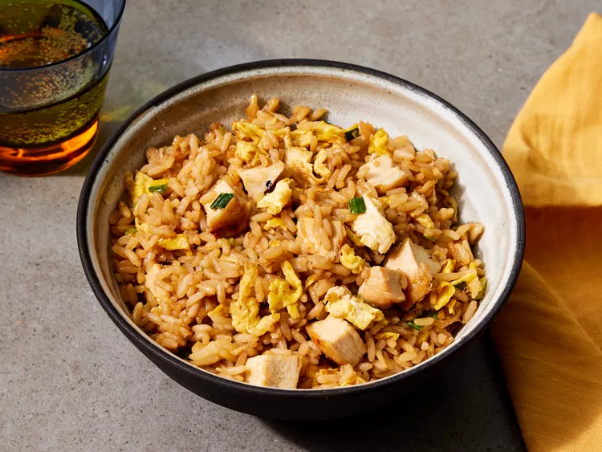

Hibachi-Style Fried Rice

This flavorful hibachi-style fried rice is made with rice, eggs, vegetables, and a savory soy sauce blend. It makes a great side dish or main course.
Ingredients
- 2 tablespoons vegetable oil
- 2 large eggs, beaten
- 1 cup mixed vegetables (peas, carrots, corn)
- 2 tablespoons chopped green onion
- 2 cloves garlic, minced
- 3 cups cooked white rice, chilled
- 3 tablespoons soy sauce
- 1 tablespoon butter
- 1 teaspoon sesame oil
- Salt and pepper to taste
Instructions
- Heat 1 tablespoon of vegetable oil in a large skillet or wok over medium-high heat.
- Pour in the beaten eggs and scramble until just set, then transfer to a plate.
- Add the remaining oil and butter to the pan. Sauté garlic and mixed vegetables until tender.
- Add the chilled rice and stir-fry until heated through and slightly golden.
- Return the cooked eggs to the pan. Stir in soy sauce, sesame oil, and green onions.
- Season with salt and pepper, toss to combine, and cook for another minute.
- Serve hot with extra green onions or soy sauce if desired.
Enjoy your hibachi-style fried rice!
Back to recipes